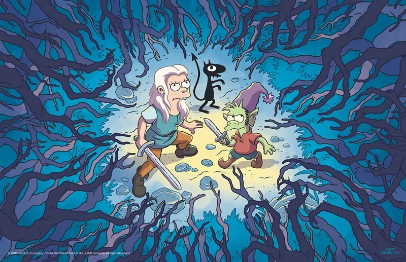
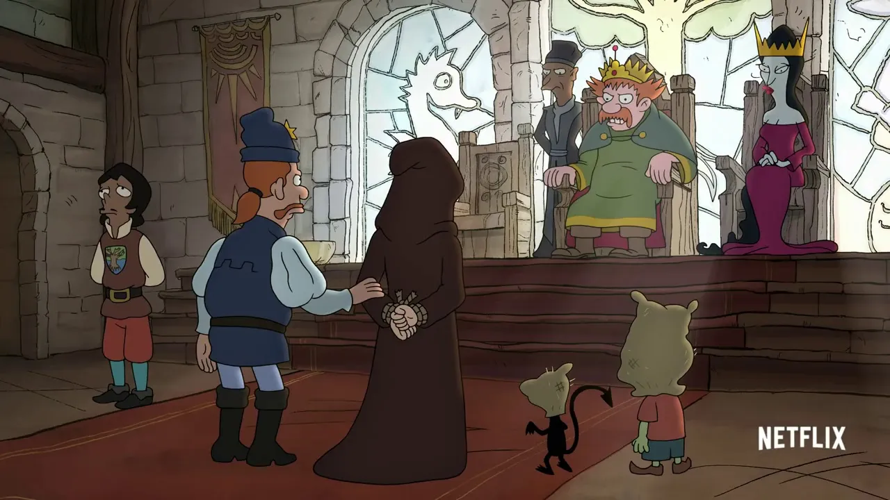

Bean é uma princesa alcoólatra que mora no reino mágico de Dreamland ao lado de Luci, seu demônio pessoal, e de Elfo, seu melhor amigo. Além dos problemas com a bebida, a jovem nobre está disposta, juntamente com sua turminha, a viver as mais inusitadas aventuras - nem que, para isso, precise encarar terríveis ogros ou tolos humanos.
Desencanto é uma série de desenho animado adulta estadunidense criaada por matt Groenin. A série é a primeira produção de Groening para a netflix; ele criou anteriormente The simpson eFuturama para a 20th century Fox television. Com cinco partes de 10 episódios, foram exibidos um total de 50 episódios. Lançada mundialmente via streaming pela netflix.
A Netflix apostou suas fichas na parceria com o criador de Simpsons e deu vida a uma nova série que mescla o clássico humor ácido de Groening a um contexto de fantasia medieval, mas dotado de críticas sociais debochadas e em geral bem pontuadas.
(Des)encanto traz um universo mágico protagonizado por Tiabeanie, mais conhecida como Bean, uma princesa beberrona que foge completamente aos padrões impostos pela realeza às mulheres da época e que vive sob forte repressão do atrapalhado e confuso pai, o rei Zog, que passou a tratá-la com ainda mais rigor após a morte da rainha.
A rotina de Bean muda quando ocasionalmente um elfo chamado Elfo (ba dum tis!) e o demônio Luci cruzam seu caminho quando estava prestes a casar-se obrigatoriamente em virtude de uma aliança governamental. O inusitado trio acaba criando um vínculo de amizade que os levará por diversas aventuras e situações cada vez mais bizarras.
(Des)encanto tem como ponto forte seus personagens, desenvolvidos muito bem ao longo dos episódios – embora algumas estórias sejam episódicas, há uma continuidade quanto aos fatos principais da trama. Esta é apenas uma das diferenças em relação aos Simpsons e Futurama; exceto pelo tipo de humor e obviamente os traços, a série se diferencia bastante de suas “irmãs” quanto a questões narrativas.
Além dos ótimos protagonistas e mesmo personagens secundários, (Des)encanto tem sacadas muito boas e cutuca em algumas feridas, especialmente quanto a situações de machismo, questionamentos de fundamentalismo religioso e as excentricidades da realeza. A dublagem brasileira – que está excelente – é um grande diferencial e usa, com propriedade, referências a diversos memes que marcaram época; mas, por vezes, estas referências acabam sendo um pouco repetitivas ou forçadas.
Vale ressaltar a altíssima qualidade da animação – provavelmente uma das mais caprichadas da Netflix – e também a trilha sonora que dá todo clima de imersão em um mundo de fantasia medieval.
(Des)encanto é capaz de agradar tanto aos fãs de Simpsons e Futurama quanto a qualquer espectador que busque uma ótima série animada e boas risadas com os trejeitos e situações absurdas. Fica a expectativa para a próxima temporada.